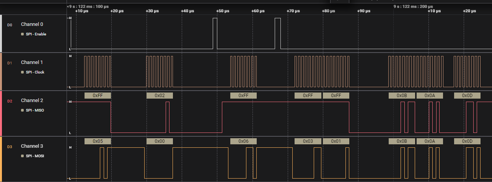

EEPROM Driver
The EEPROM driver offers byte read, byte write and page write functions as well as functions to access and modify the status register for things
like array protection and WIP or WEL flags. It communicates via SPI.
Successful SPI read/write:


ADXL345 Accelerometer Driver
The ADXL345 driver offers low-level functions and seperate functions to retrieve the accelerometer data (either raw or in mps^2).
The initialisation makes sure the settings of the device are set properly.
This device also communicates via SPI but also via an INTERRUPT pin which is raised when data is ready.
Successful SPI comm: